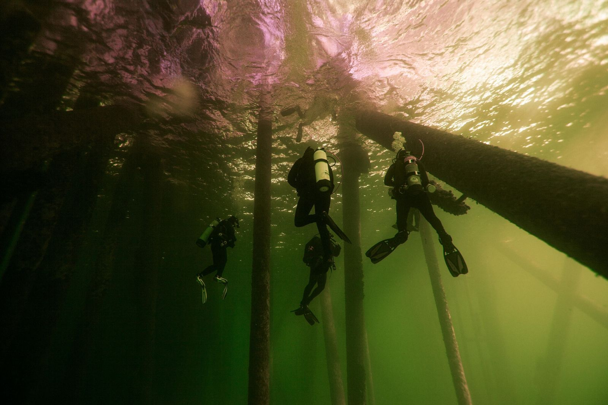
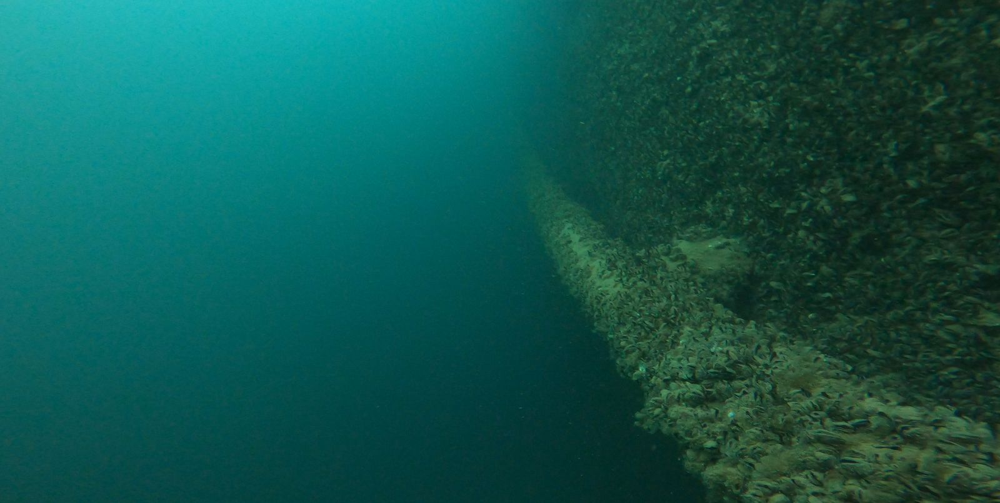

Arbeiten unter Wasser, ohne die Anlage abzustellen.
Montage, Reparatur, Wartung und Reinigung direkt im Wasser. Das spart Trockenlegung, Taucherglocke und teure Betriebsunterbrüche.
Was wir unter Wasser ausführen
Handwerkliche Arbeiten mit Hand- und Spezialwerkzeug. Vorbereitung und Material stimmen wir mit Ihnen oder Ihrem Lieferanten ab.
Installation und Montage
Setzen und Befestigen von Sensoren, Messgeräten, Datenloggern, Halterungen und Markierungen.
Leitungen und Kabel
Befestigen, Sichern und Umlegen von Leitungen und Kabeln, Setzen von Schellen und Beschwerungen.
Abdichten und Verschliessen
Setzen von Stopfen, Blindflanschen und Abdichtungen, zum Beispiel für Revisionen an Leitungen.
Reinigung
Reinigung von Rechen, Sieben, Einläufen und Kühlwasserfassungen, Entfernen von Muschel- und Pflanzenbewuchs.
Stege und Verankerungen
Kontrolle und Instandsetzung von Verankerungen, Ketten, Bojensteinen und Pfählen.
Boote und Schiffe
Propellerreinigung, Anodenwechsel und Kontrollen am Rumpf ohne Auswasserung.

Quaggamuschel an Fassungen und Leitungen
Die invasive Quaggamuschel breitet sich in vielen Schweizer Seen aus. Sie besiedelt Leitungen, Rechen und Einlaufbauwerke dicht und kann Querschnitte verengen, Filter verstopfen und den Unterhalt stark verteuern.
Wir dokumentieren den Befall, entfernen Bewuchs mechanisch an zugänglichen Stellen und liefern die Grundlagen, um Reinigungsintervalle oder bauliche Massnahmen zu planen.
Wichtig: Muscheln und Larven dürfen nicht in andere Gewässer verschleppt werden. Ausrüstung wird nach Einsätzen in befallenen Seen gereinigt und getrocknet.
Warum unter Wasser statt trocken
- Kein BetriebsunterbruchFassungen, Pumpwerke und Anlagen laufen weiter oder werden nur kurz abgestellt.
- Keine TrockenlegungKein Spundwandkasten, kein Ablassen, keine Auswasserung.
- Kurze VorbereitungEinfache Arbeiten sind oft innert Tagen umsetzbar.
- DokumentiertVorher- und Nachher-Aufnahmen gehören zu jedem Auftrag.
Einsatzbedingungen
- TiefeMontage und Wartung typischerweise bis 20 m, Kontrollen bis 40 m
- WerkzeugHandwerkzeug und Spezialwerkzeug, nach Abklärung
- Schweissen und SchneidenNur nach technischer Abklärung und auf Anfrage
- MaterialDurch Sie gestellt oder durch uns beschafft
Wenn eine Lösung erst entwickelt werden muss, etwa eine Halterung oder eine Vorrichtung, übernehmen wir das im Bereich Engineering und Entwicklung.
Arbeiten unter Wasser anfragen
Beschreiben Sie Anlage, Tiefe und gewünschte Arbeit. Fotos oder Pläne helfen bei der Offerte.